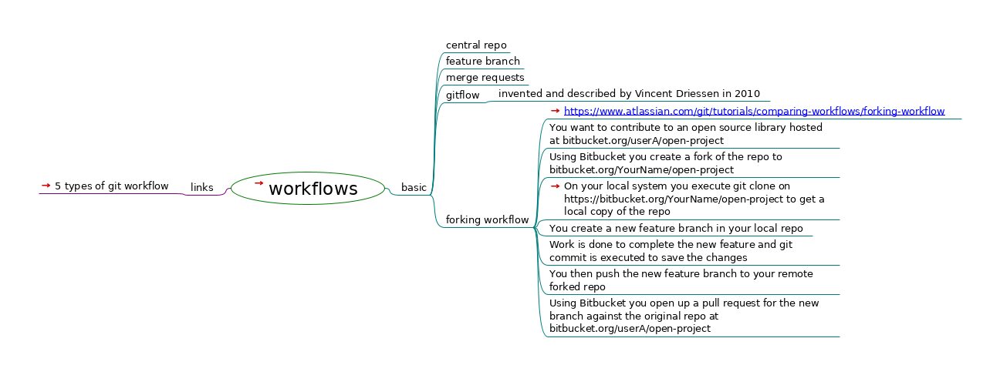

workflows

workflows
links
5 types of git workflow
basic
central repo
feature branch
merge requests
gitflow
invented and described by Vincent Driessen in 2010
forking workflow
https://www.atlassian.com/git/tutorials/comparing-workflows/forking-workflow
You want to contribute to an open source library hosted at bitbucket.org/userA/open-project
Using Bitbucket you create a fork of the repo to bitbucket.org/YourName/open-project
On your local system you execute git clone on https://bitbucket.org/YourName/open-project to get a local copy of the repo
You create a new feature branch in your local repo
Work is done to complete the new feature and git commit is executed to save the changes
You then push the new feature branch to your remote forked repo
Using Bitbucket you open up a pull request for the new branch against the original repo at bitbucket.org/userA/open-project